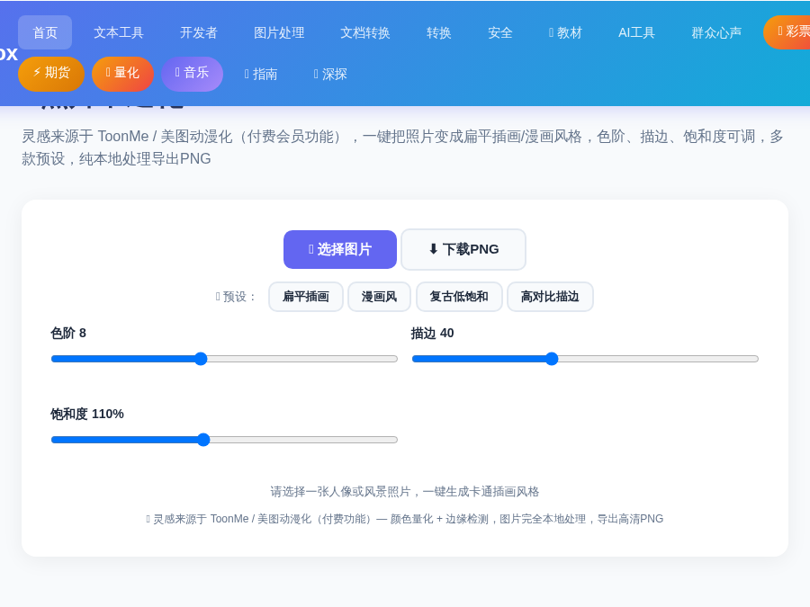
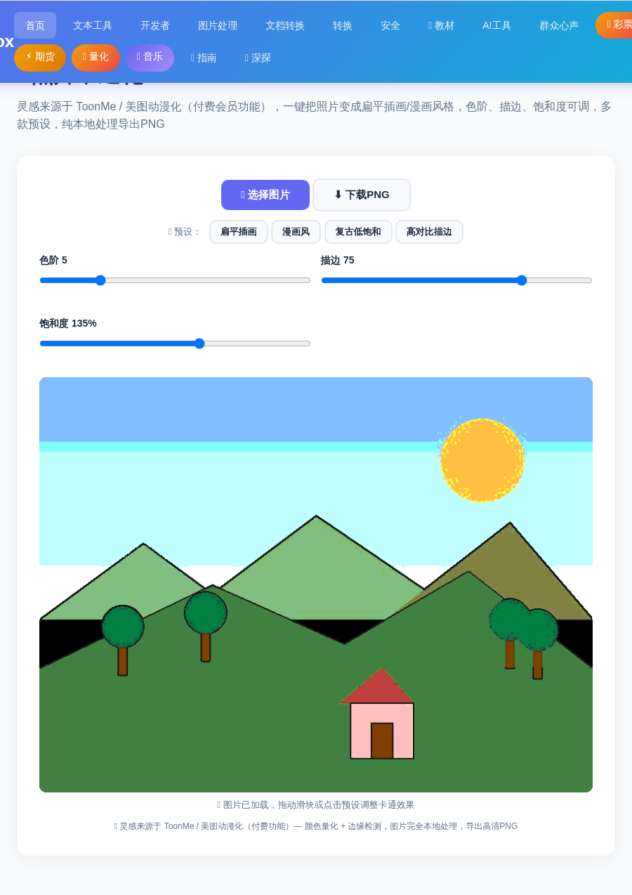
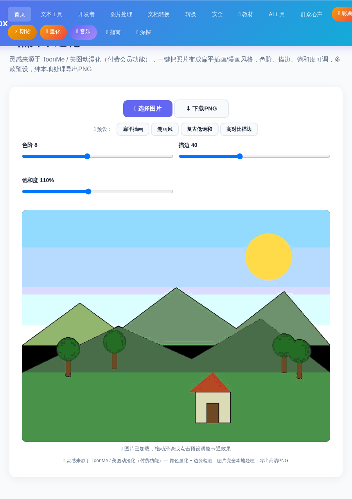
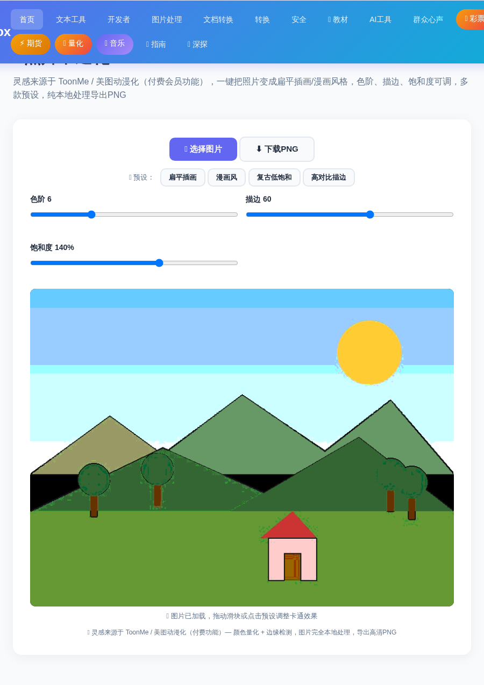

你是不是见过朋友圈里那些"照片变插画"的神图？明明是同一张照片，一键就变成了漫画感十足的插画风，又高级又有趣。其实这不需要下载付费软件，也不需要会 PS——用 照片卡通化 工具，上传照片、点一下预设、微调参数，3 步就能完成。
工具内置 4 种风格预设：扁平插画、漫画风、复古低饱和、高对比描边，每种风格一键切换；不满意还能手动调节 色阶层级、边缘描边强度、饱和度 三个参数，调出完全属于你的独特风格。
全程在浏览器本地处理，照片不会上传到任何服务器，隐私完全放心。
进入 ToolBox 首页，点击「图片处理」分类，找到「照片卡通化」工具卡片（彩色画笔图标 🎨）。也可以从首页搜索框直接搜"卡通"快速定位。
打开工具后，点击「📁 选择图片」按钮，从电脑里选择一张照片。支持 JPG、PNG、WebP 等常见格式。选好人像或风景照效果最惊艳——人像变插画头像，风景变概念插画画册。

上传照片后，工具会先用默认的"扁平插画"参数渲染一遍。接下来点击上方 4 个预设按钮，实时切换风格对比效果：
| 预设 | 参数组合 | 适用场景 |
|---|---|---|
| 扁平插画 | 色阶 8 / 描边 40 / 饱和度 110% | 最百搭，色彩柔和干净，适合头像、朋友圈配图 |
| 漫画风 | 色阶 5 / 描边 75 / 饱和度 135% | 漫画网点感，线条明显，适合宠物、卡通形象 |
| 复古低饱和 | 色阶 4 / 描边 25 / 饱和度 70% | 做旧胶片感，低调耐看，适合复古主题 |
| 高对比描边 | 色阶 3 / 描边 95 / 饱和度 100% | 粗线条漫画风，视觉冲击强，适合商业海报素材 |
下面两张图分别展示了"漫画风"和自定义参数后的效果对比：


预设是起点，微调才是灵魂。三个参数对应三种感受：

满意后点击「⬇️ 下载PNG」按钮，图片以原始分辨率导出，可以直接用于头像、配图、打印，不会糊。
Q：照片会上传到服务器吗？会不会泄露隐私？
不会。所有处理都在你的浏览器本地完成（Canvas 像素级处理），照片不会离开你的设备，关掉页面即自动清除。
Q：为什么我的照片处理完看起来很"脏"或者颜色很怪？
通常是色阶调得太小（比如 2~3）导致色块过度简化。把「色阶层级」调到 6~8，饱和度降到 100%~120%，效果会更自然。
Q：支持哪些图片格式？导出是什么格式？
支持 JPG、PNG、WebP、BMP 等浏览器常见格式；导出为 PNG 无损格式，保留原始尺寸，可用于打印和设计。
Q：能做视频截图或者动图吗？
当前版本处理静态图片。你可以先用视频工具截取一帧，再把它卡通化，同样能做出电影感封面。
📌 还没试过？现在就上传一张照片，看看它变成插画的样子
🎨 去卡通化照片 →